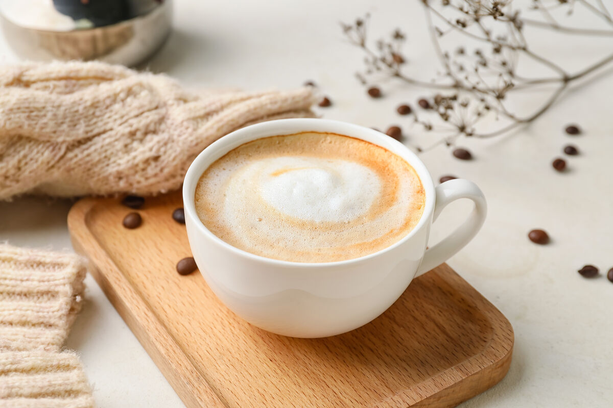

Cappuccino
Moka Pot ile evde kolayca cappuccino hazırlayabilirsiniz. Yoğun espresso ve bol süt köpüğüyle, kafe keyfinizi evde yaşayın.
🧾 Malzemeler
- Soğuk su (moka pot alt haznesi için)
- İnce öğütülmüş kahve (moka pot için, filtre haznesini dolduracak kadar)
- 100 ml süt
- İsteğe bağlı: tarçın, kakao veya çikolata rendesi
🔧 Ekipman
Moka Pot
Ocak
Cezve veya küçük tencere
French Press, süt köpürtücü veya kapaklı kavanoz
Bardak
Hazırlanışı
Moka Pot ile Cappuccino
- Moka Pot'u Hazırlayın:
Alt hazneye soğuk su koyun (valf seviyesini geçmeyecek şekilde).
Filtre haznesine ince öğütülmüş kahveyi ekleyin (bastırmadan, düz olacak şekilde). - Espresso'yu Demleyin:
Moka Pot'un üst kısmını kapatın ve ocağa yerleştirin.
Kahve yukarı akmaya başladığında ısıyı biraz düşürün.
Kahve sesi değiştiğinde demleme tamamlanmıştır. Altını kapatın. - Sütü Isıtın:
Yarım bardak sütü (yaklaşık 100 ml) bir cezve veya küçük tencerede kaynatmadan ısıtın.
Süt çok sıcak ama kaynamamış olmalı (yaklaşık 65°C – el dayanmayacak sıcaklıkta). - Sütü Köpürtün:
Isıtılmış sütü French Press, süt köpürtücü veya kapaklı kavanoz ile köpürtün.
Köpüğü oluşturmak için sütün hacmi yaklaşık iki katına çıkmalı. - Kahveyi ve Sütü Birleştirin:
Bardağa önce moka pot ile hazırladığınız espressoyu (yaklaşık 1 shot – 30 ml) dökün.
Üzerine ısıttığınız sütü ekleyin.
En üste ise bolca süt köpüğü yerleştirin. - Servis ve İsteğe Bağlı Eklemeler:
İsterseniz tarçın, kakao veya çikolata rendesi serpebilirsiniz.
Afiyet olsun!
Espresso Makinesi ile Cappuccino
- Espresso Hazırlayın:
Espresso makinesinde 18-20g ince çekilmiş kahveyi portafiltreye yerleştirin ve sıkıştırın.
25-30 saniyede yaklaşık 30 ml espresso elde edin. - Sütü Isıtın ve Köpürtün:
100 ml sütü buhar çubuğu ile 65°C'ye kadar ısıtın ve köpürtün.
Süt hacmi yaklaşık iki katına çıkmalı, köpük yoğun ve kalın olmalı. - Bardağa Dökün:
Önce espressoyu bardağa dökün.
Üzerine sıcak sütü ekleyin.
En üste ise bolca süt köpüğü ekleyin. - Servis ve Süsleme:
Dilerseniz üzerine kakao, tarçın veya çikolata rendesi serpebilirsiniz.
Afiyet olsun!
Püf Noktalar
- Cappuccino, genellikle 1/3 espresso, 1/3 sıcak süt ve 1/3 süt köpüğünden oluşur. Bu oranı göz önünde bulundurarak kendi zevkinize göre dengeyi ayarlayabilirsiniz.
- Sütü kaynatmadan ısıtmak, daha yumuşak bir köpük elde etmenizi sağlar.
- Köpürtme işlemi için French Press yoksa, kapaklı bir kavanozda da sütü çalkalayabilirsiniz.